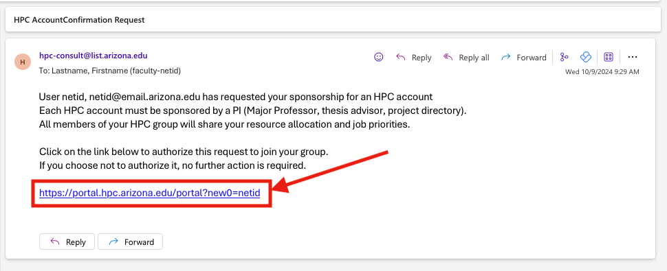
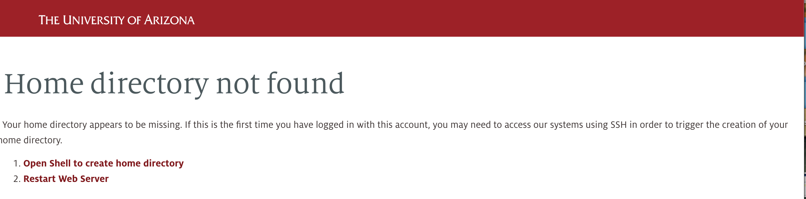
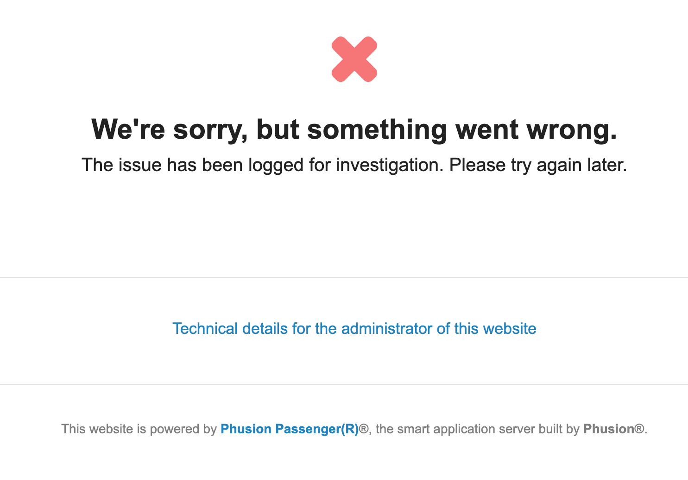
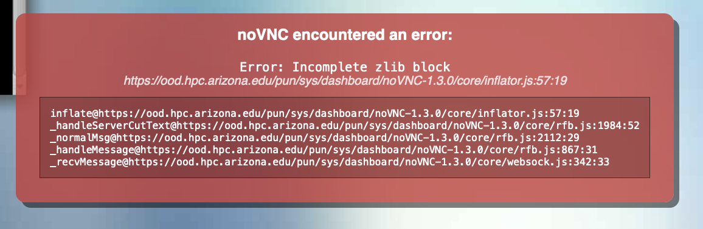
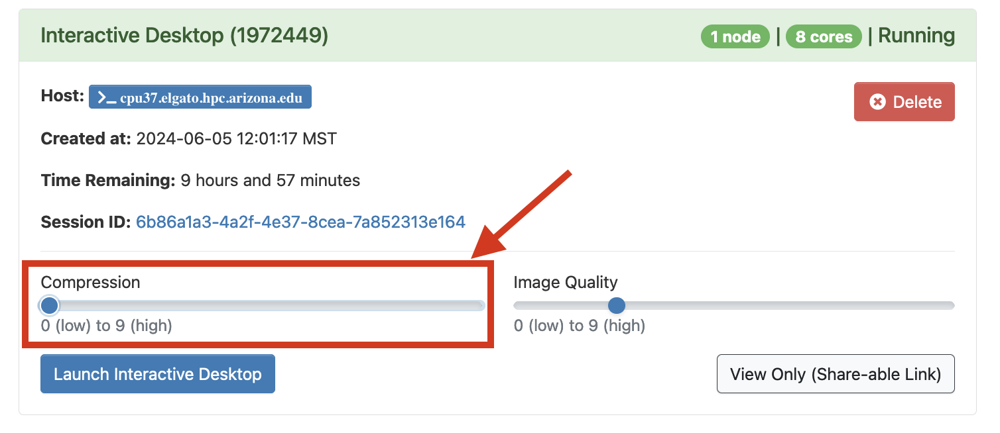

FAQs¶
Welcome to our Frequently Asked Questions page. The FAQs are organized by topic for ease of navigation. Use the sidebar on the left to find your topic. If you cannot find an entry related to your question, please let us know and we will be happy to add it.
Account Access¶
Registration¶
A step by step guide is available in our Account Creation page.
Faculty members who manage their own HPC groups can use our user portal to add members to their group. If the user does not have an HPC account, this will sponsor them for access. You may also add existing HPC members to your group. We have instructions in our Research and Class Groups page that detail the process with screenshots.
If you have received a sponsorship request email, you can click the link at the bottom to approve it. This will redirect you to the user portal and will automatically add the requestor to your HPC group. No further action is required after clicking the link.
If there are any issues with the sponsorship process, you may add the user manually through our user portal by following the instructions in our Research and Class Groups guide.
Yes, if you are a former university affiliate or campus collaborator participating in research, you may register as a Designated Campus Colleague (DCC). Once your DCC status has been approved, you will receive a NetID+ which you may use to create an HPC Account.
If you are a graduating student or leaving your position of employment, see our policies page on affiliation loss for more details.
Login Issues¶
There are many reasons you may be having issues logging in. A possible list of reasons may include:
- You haven't created an account yet or you have not yet been sponsored.
- You aren't using two-factor authentication (NetID+).
- You need to wait 15 minutes. If you just created your account, it takes time before you can log in.
- You're trying to connect using ssh
<netid>@login.hpc.arizona.edu. This will not work. Instead, use:ssh <netid>@hpc.arizona.edu. - You're using
<netid>@hpc.arizona.eduor<netid>@email.arizona.eduas your username in PuTTY. Instead, use only your NetID. - You've entered your password incorrectly too many times. After multiple failed password entries, the system will place a 60 minute ban on your account for security reasons. Your account will automatically unlock after 60 minutes. Attempting to log in before your account unlocks will reset the timer.
Linux systems do not display character strokes while entering your password which can make it look like the SSH client is frozen. Even though it doesn't appear that anything is happening, the system is still logging your input. To proceed, type your password at the prompt and press enter.
HPC uses the same NetID login credentials as all UArizona services. If you need to reset your NetID password you can do so using the NetID portal.
If you have just registered for an HPC account, you need to wait a little while for the request to propagate through the University systems (this can take up to an hour).
If you have not yet received sponsorship for HPC access, you will need a faculty member/PI to sponsor you. If you are a PI, ensure you have sponsored yourself by adding yourself to your group. Instructions on account creation can be found in our Account Creation page.
You need an HPC account - see our Account Creation page for details. Once you've done that, you'll need to wait a little while to log in. If your PI hasn't already added you to their group, you'll need to wait for that as well.
This error shows up when your NetID has been locked, usually due to multiple failed login attempts when trying to access university services. Contact 24/7 to unlock your account: https://it.arizona.edu/get-support
- Ensure you are using the correct password. Sometimes typing your password into a plain text file and copying/pasting it into the terminal can help.
- You need to wait about 15 minutes after your account is approved for the account to be available
- You must enroll in NetID+. Depending on the application you use to log in, you may not get the typical NetID+/Duo menu of options, or an error message indicating this is your problem
Jobs and Scheduling¶
There are a few reasons your job may not be running, check below for some ideas on diagnosing the issue:
-
Run squeue: On the command line, run
squeue --job=<jobid>and see if there is anything listed under the column(REASON). This may give an idea why your job is stuck in queue. We have a table in our Slurm documentation that describes what each Reason code means. - Resource availability: Due to the number of HPC users, it may not always be possible to run a submitted job immediately. If there are insufficient resources available, your job will be queued and it may take up to a few hours for it to begin executing.
- Allocation exhausted: Your group may have run out of standard hours. You can check your allocation using the command
va. - Resource usage limitations: Your group/job has reached a resource usage limit (e.g., number of GPUs that may be used concurrently by a group, or a job has requested more than the 10 day max walltime). Try running
job-limits <group_name>to see what limits you're subject to and if there are any problem jobs listed. For more information on limits, see Job Limits documentation. - Requesting rare resources: You may be requesting a rare resource (e.g., 4 GPUs on a single node on Puma or a high memory node).
- If you are requesting a single GPU on Puma and are frustrated with the wait times, you might consider checking if Ocelote will work for your analyses. There are more GPU nodes available on that cluster, typically with shorter wait times. See our Compute Resources page for more information on the resources available by cluster.
- If you are trying to run a job on a standard node and have been waiting for a very long time, try checking its status using
job-history <jobid>. If you seeAllocated RAM/CPUabove 5 GB on Puma or above 6 GB on Ocelote, then you are queued for the high memory node which can have very long wait times. To queue for a standard node, cancel your job and check that your script has the correct ratios.
If your job is in queue, sometimes Slurm will give you information on why it's not running. This may be for a number of reasons, for example there may be an upcoming maintenance cycle, your group's allocation may be exhausted, you may have requested resources that surpass system limits, or the node type you've requested may be very busy running jobs. We have a list of reason codes in our Monitoring Jobs and Resources page that will give more comprehensive information on what these messages mean. If you don't see the reason code listed, contact our consultants.
If your jobs keep stopping and restarting, it's likely because you are using Windfall. Windfall is considered lower priority and is subject to preemption by higher priority jobs. Before submitting a job to Windfall, consider using your group's allotted monthly hours first. Jobs using Standard hours will queue for a shorter period of time and will not be interrupted. You can check your group's remaining hours using the command va. To see more information on your allotted hours and the different job queues, see our page on compute allocations.
If your job is not using the Windfall partition and is being interrupted, contact our consultants.
No, software to run applications is not available on the login nodes. To run/test your code interactively, start an interactive session on one of the system's compute nodes. Processes running on the login nodes are subject to termination if we think they are affecting other users. Think of these as 'submit' nodes where you prepare and submit job scripts.
Unfortunately, that is not possible. The compute nodes get their image from the head node and have to remain the same. If you need to install software, for example, you can install the software locally in your account. See this example. Another option is to use containers as part of your workflow.
Slurm will let you ssh to nodes that are assigned to your job, but not to others.
There are a few reasons you might get out of memory errors:
- You're using
-c <N>to request CPUs. Based on the way our scheduler is set up, this will reduce the memory allocation for your job to 4 MB. To solve this, change your CPU request by either setting--ntasks=<N>or--ntasks=1 --cpus-per-task=<N>. - You may not have specified the number of nodes required for your job. For non-MPI workflows, if Slurm scatters your CPUs across multiple nodes, you will only have access to the resources on the executing node. Explicitly setting
--nodesin your script should help, e.g.:#SBATCH --nodes=1 - You may not have allocated enough memory to your job. Try running
seff <jobid>to see your memory usage. You may consider using memory profiling techniques, allocating more CPUs, or using a high memory node.
Windfall jobs can be preempted by a higher priority queue. Each session creates an interactive job on a node and it is unsatisfactory to be dumped in the middle of that session. A desktop session would have the same unpleasant result. Windfall can be used if you do not have enough standard time left. Consider though that a one hour session using one compute core only takes up 1 CPU hour.
No, unfortunately when an interactive job ends it is no longer accessible. This applies to both OnDemand sessions and those accessed via the command line. We recommend using the standard partition rather than windfall when running interactive jobs to prevent preemption.
To prevent core dump files from being generated in jobs (which can be quite large and may fill up your working directory), add the following to your batch script:
ulimit -c 0Yes, you can use a pipefail. This is a way to automatically kill a job after an error without moving on to any subsequent steps. To use this, add the following to the beginning of your batch script:
set -oe pipefailIf you're trying to submit a job and get:
sbatch: error: QOSGrpSubmitJobsLimit
sbatch: error: Batch job submission failed: Job violates accounting/QOS policy (job submit limit, user's size and/or time limits)--qos directive in your job request. This is necessary to use high priority and qualified hours. Check our Slurm Batch Directives page for specifics on how to do this.
Command Line¶
There may be a few reasons for this. First, make sure your shell is set to Bash. If your shell is not set to Bash, contact our consultants so that they can reset it for you.
If your shell is set to Bash, double-check that you haven't changed, overwritten, or aliased anything important either your ~/.bashrc or ~/.bash_profile. E.g., unsetting your PATH, aliasing ., and so on will corrupt your environment and prevent you from interacting with HPC normally.
When you log into HPC, the variable $COMMAND_PROMPT is set to display your current cluster (e.g. (puma)). Sometimes this can cause formatting problems. If you'd prefer to modify your $PS1 (command prompt variable) instead, you can add the following to your ~/.bashrc:
if [ -n "${PROMPT_COMMAND}" -a -r /usr/local/bin/slurm-selector.sh ]; then
SavePS1=${PS1}
Cur_Cluster=$(eval ${PROMPT_COMMAND} 2>/dev/null)
PS1="${Cur_Cluster}${SavePS1}"
unset PROMPT_COMMAND
for c in puma ocelote elgato; do
alias ${c}="PS1=\"(${c}) ${SavePS1}\"; . /usr/local/bin/slurm-selector.sh ${c}; unset PROMPT_COMMAND"
done
unset Cur_Cluster SavePS1
fi
Files that start with a dot, i.e. a ., are hidden when executing ls without additional options. If you use ls -la, that will show you all the files that exist, both standard and hidden. Dot files are generally important configuration files so it's important to be careful with their contents and deleting them.
Your bashrc is a specific dot file that lives in your home directory (~ is just shorthand for your home) and defines your environment every time you log in. Any commands you add to that file will be run whenever you access the system. This means, if you have common aliases you like to use, paths you like exported in your environment, etc., these can be added to your bashrc to avoid the headache of having to define them in every session.
For more information on working with hidden files, see our Linux cheat sheet page.
Maintenance¶
If your jobs are sitting in queue for a long time after a system maintenance period, it's likely because it was a rolling maintenance cycle. During rolling maintenance, all nodes are put into a "drain" state. This means they stop accepting any new jobs until all the jobs running on them complete. Once they are empty, they are taken offline, updated, rebooted, and then put back online to accept new jobs. Because job runtimes can be up to 10 days, it may take up to 10 days for job queues to return to normal. For more information on maintenance, see our maintenance documentation.
Open OnDemand Issues¶
Website Access¶
If you are trying to log in to Open Ondemand and are seeing the following:

- You have not yet been sponsored by a faculty member. See our Account Creation page for instructions on getting registered for HPC.
- If you are already registered for HPC, this may be a browser issue. Try logging in again in an incognito session or different browser to test. If this succeeds, clearing your browser's cookies should help.
If you're trying to log into Open OnDemand and are seeing the following, it means your home directory has not yet been created:
Your home directory is created the first time you log into our system using a command line utility (such as the terminal, PuTTY, etc.). To create your home directory, either click the button Open Shell to create home directory on the page, or log in via a command line utility, then try logging into Open OnDemand again.
If you are trying to log in to Open Ondemand and are seeing the following:

this may be a browser issue. Try logging in again in an incognito session or different browser to test. If this succeeds, clearing your browser's cache should help.
If you are trying to log in to Open OnDemand and are seeing the following:

check your storage usage in your home directory. You can do this by logging into HPC in a terminal session and using the command uquota. If your storage usage is >50 GB, OnDemand cannot create the temporary files necessary to give access to the website. Try clearing out some space in your home and then logging back into OnDemand.
Applications¶
If you're seeing:

when trying to connect to an interactive desktop session, the likely culprit is Anaconda. For a permanent solution, you can run the following command from an interactive terminal session:
conda config --set auto_activate_base false
conda activate.
If you're seeing the following error pop up when using an OnDemand Desktop session:

Check the compression value set for your job. If it has been set to zero, increase the value to something nonzero and retry your session.
To check and modify your compression, go to your job tile in ood.hpc.arizona.edu under My Interactive Sessions and check the lower left-hand section.

Software and Modules¶
Yes, when you start an interactive terminal session or submit a batch script, the modules ohpc, gnu8, openmpi3, and cmake are automatically loaded. If your code uses Intel compilers, you will want to manually unload gnu8 and openmpi3 to prevent conflicts.
The exception: If you are working in a terminal in an Open OnDemand interactive desktop session, nothing is loaded by default and you will need to manually load any necessary modules. To start, always use module load ohpc
Load the module, find the path to the executable by checking the $PATH variable, then list the contents. For example:
module load lammps
echo $PATH
ls /opt/ohpc/pub/apps/lammps/3Mar20/bin
lmp_mpi
module show <software> to see all the environment variables that are set at load time.
There are a few different possibilities:
- You are not in an interactive session. Modules are not available on the login nodes. You may request an interactive session by using the command
interactive. - Your shell is not set to bash. If this is the case, contact our consultants so that they can reset it for you.
- You have modified or deleted your
~/.bashrc. If this is the case, open (if the file exists) or create and open (if the file is missing) the file .bashrc in your home directory and add the lines:
if [ -f /etc/bashrc ]; then
. /etc/bashrc
fi
You need to belong to a special group called g03. You can request to be added by submitting a help ticket. This is a constraint in Gaussian that other modules do not have.
If you are able to compile your software you can take advantage of most of the AMD Zen architecture.
| Compiler | Arch-Specific | Arch-Favorable |
|---|---|---|
| GCC 9 | -march=znver2 |
-mtune=znver2 |
| LLVM 9 | -march=znver2 |
-mtune=znver2 |
Intel compilers are optimized for Intel processors. There is some debate around the concept of unfair CPU dispatching in Intel compilers. By default, software on the HPC clusters is built with GCC (on Puma it is GCC 8.3). This is in keeping with our preference for community software.
Prior versions of Apptainer are routinely removed since only the latest one is considered secure. Notify the consultants if you need help with transition to the current version. Apptainer is installed on the operating systems of all compute nodes so does not need to be loaded with a module.
Unfortunately, Windows applications can't be run on HPC. However, AWS has been used successfully for Windows software with GPU needs. It’s easy to set up, cost effective, and very scalable. Amazon also has a cloud credit for research program available.
You may also consider trying Jetstream2, a national resource where you can create and use Windows virtual machines. More information can be found here: https://jetstream-cloud.org/
R installations can sometimes be frustrating. We have instructions for how to set up a usable R environment, how to diagnose and troubleshoot problems, and steps to help with known troublesome packages documented in in our Using and Customizing R Packages section.
You can install python packages locally using either a virtual environment or a local conda environment.
You can install packages and make them available by first creating a virtual environment or conda environment, then setting up a custom Jupyter kernel. See instructions in our Python or Anaconda documentation for details.
Ansys has the Distributed capability built in to increase performance. Ansys uses the Intel compiler and so uses Intel MPI. By default, we load OpenMPI, so you will need to do this:
module unload gnu8 openmpi3
module load intel
module load ansys
You should initialize micromamba only once, and from an interactive session. If you are getting micromamba initialization errors when submitting jobs with Slurm batch scripts, then see micromamba in Batch Jobs for solutions.
Storage¶
General¶
No. We NFS mount storage across all compute nodes so that data is available independent of which compute nodes are used. See our page on transferring data for more information.
After creating your HPC Account, your home directory will not be created until you log in for the first time. Without your home directory, you will not be able to transfer your data to HPC. If you are struggling and receiving errors, sign into your account either using the CLI through the bastion or logging into Open OnDemand and then try again.
It's unlikely. Backups are not made and anything deleted is permanently erased. If you have deleted an important file, reach out to our consultants as soon as possible and they may be able to retrieve it, however, this is not guaranteed.
To ensure your data are safe, we strongly recommend:
- Making frequent backups, ideally in three places and two formats. Helpful information on moving data can be found on our page Transferring Data.
- Use
rmandrm -rwith caution as these commands cannot be undone! Consider usingrm -iwhen removing files/directories. The-iflag will prompt you to manually confirm file removals to make really sure they can be deleted. - You can open a support ticket to request assistance. Files that are deleted may not have been removed from the storage array immediately (though this is not guaranteed), don't wait more than a few days.
If your home directory is full and you can't find what is taking up all the space, it's possible the culprit is a hidden file or directory. Hidden objects are used for storing libraries, cached singularity/apptainer objects, saved R session, Anaconda environments, configuration files, and more. It's important to be careful with hidden, or "dot", files since they often control your environment and modifying them can lead to unintended consequences.
To view the sizes of all the objects (including hidden) in your home, one quick command is du -hs $(ls -A ~), for example:
[netid@junonia ~]$ du -hs $(ls -A ~)
32K Archives
192M bin
4.7G Software
46M .anaconda
1.9M .ansys
4.0K .apptainer
16K .bash_history
4.0K .bash_logout
4.0K .bash_profile
12K .bashrc
20M ondemand
Unfortunately, without active university credentials it is not possible to access HPC compute or storage resources. External collaborates who need ongoing access may apply for Designated Campus Colleague, or DCC, status. This is a process done through HR and will give the applicant active university credentials allowing them to receive HPC sponsorship.
Otherwise, data will need to be moved off HPC and made available on a mutually-accessible platform. This may include (but is not limited to): Google Drive, AWS S3, Box, and CyVerse's Data Store.
xdisk¶
Yes, a PI can add a trusted group member as a delegate by following the instructions in our Research and Class Groups page. Once a group member is added as a delegate, they can manage the group's xdisk allocation on behalf of their PI in the user portal.
A group's PI owns the xdisk allocation. By default, your PI has exclusive read/write/execute privileges for the root folder /xdisk/<pi_netid>.
By default, members of a research group only have write access to their subdirectories under /xdisk/<pi_netid>. If they so choose, a PI may allow their group members to write directly to that location by running the following command:
chmod g+w /xdisk/<pi_netid>
When an xdisk allocation is created, a subdirectory is automatically generated for and owned by each individual group member. Group members can access their individual spaces by:
cd /xdisk/<pi_netid>/<netid>
/xdisk/<pi_netid> is not writeable for group members, contact our consultants and they can create one.
Typically when an xdisk allocation is created, it will automatically generate a directory for each group member. In the unlikely event that it doesn't or, more commonly, a group member is added after the allocation has been created, contact our consultants and they can create one.
No, the full xdisk allocation is available for every member of the group. It's up to group members to communicate with one another on how they want to utilize the space.
xdisk is a temporary storage space available to your research group. When it's close to its expiration date, notifications will be sent to all members of your group..
xdisks are managed by your group's PI by default. This means if you want to request an xdisk or modify an existing allocation (e.g., extending the time limit or increasing the storage quota), you will need to consult your PI. Your PI may either perform these actions directly or, if they want to delegate xdisk management to a group member, they may do so by following the instructions under Delegating Group Management Rights.
To modify your allocation's time limit or storage quota, your PI can either do so through the Web Portal under the Storage tab, or via the command line. If your PI would like to delegate management rights to a group member, they may follow the instructions under Delegating Group Management Rights. Once a group member has received management rights, they may manage the allocation through our web portal.
If you're getting errors using xdisk commands in a terminal session, check that you are on a login node. If you are on the bastion host (hostname: gatekeeper), are in an interactive session, or are on the filexfer node, you won't be able to check or modify your xdisk. When you are on a login node, your terminal prompt should show the hostname junonia or wentletrap. You can also check your hostname using the command hostname
If you're trying to extend your group's allocation but are seeing something like:
(puma) [netid@junonia ~]$ xdisk -c expire -d 1
invalid request_days: 1
No, once an xdisk has reached its time limit it will expire. It's a good idea to start preparing for this early by making frequent backups and paying attention to xdisk expiration emails.
Once an xdisk expires, all the associated data are deleted. Deleted data are non-retrievable since HPC is not backed up. It's advised to keep frequent backups of your data on different platforms, for example a local hard drive or a cloud-based service, or (even better) both! Check our Storage documentation for more information on alternative storage offerings.
Before your group's xdisk expires, you'll want to make an external backup of anything you need to keep. External storage options include personal computers, lab servers, external hard drives, or cloud services such as AWS.
If you're moving large quantities of data, Globus is a great option. We have instructions in our Globus documentation for setting up and using this software.
We strongly recommend making archives (.tar, .zip, files etc.) of large directories prior to transferring them off the system. In general, transfer software struggles with moving many small files and performs much more efficiently moving fewer large files. You will get the better transfer speeds (sometimes by orders of magnitude) if you compress your files prior to transferring them. This can be done on our filexfer node which is designed for large file management operations (hostname: filexfer.hpc.arizona.edu).
Yes, a new xdisk may be requested immediately after the old partition expires. Data, however, may not be transferred directly from the old partition to the new one.
No, only one xdisk may be active per PI at a given time.
Rental¶
Rental storage can be requested by PIs through the user portal. A guide with screenshots can found in our rental storage documentation.
Rental allocations are not mounted on the login or compute nodes. You can access your allocation by logging in to our data transfer nodes: filexfer.hpc.arizona.edu
No, rental storage is not mounted on the HPC login or compute nodes which means jobs cannot access /rental directly. Data stored in /rental need to be moved to /home, /groups, or /xdisk to be available.
R-DAS¶
Yes, if you reconnect to the VPN, your connection will still be available.
This error is seen if you are not connected to the University VPN.
R-DAS is not mounted on the HPC compute nodes or login nodes, and is not meant for running computations. But you can follow the steps in our R-DAS documentation to share data between your R-DAS allocation and your HPC storage (/home, /groups, /xdisk):
Tier 2 AWS¶
A PI must submit their group's storage request. The exception to this is if a group member has been designated xdisk/storage delegate. Delegates may submit a request on behalf of their PI by switching users in the user portal.
In most cases it will be in one business day.
You should check the Amazon site. As of March 2022:
- Frequent Access Tier, First 50 TB / Month $0.023 per GB
- Frequent Access Tier, Next 450 TB / Month $0.022 per GB
- Frequent Access Tier, Over 500 TB / Month $0.021 per GB
Not in the first release, but potentially as a future offering.
Yes. The capacity used is recorded daily and the billing is a monthly average.
It is used for accounting purposes and used by your Department's finance specialist. If you are unsure what your KFS number is, contact your department's financial services office.
Yes, you can use the CLI (command line interface) for information about your usage
No, but you can track the usage and remove any data that should not be there.
Glacier is effectively large, slow disks and Deep Glacier is tape storage.
Yes
This alert is sent to notify you whenever your storage usage grows by 10% relative to the previous week. This ensures that you're aware of any unintended spikes and the potential resulting costs.
Transfers¶
HPC¶
Check your ~/.bashrc or ~/.bash_profile to see if they are printing any output to the terminal. Transfer software like SCP or SFTP require a "silent" terminal to work successfully. If you find any echo or printf statements, comment them out and retry your transfer.
Tier 2 AWS¶
This error indicates your data have migrated to an archival storage tier (Glacier or Deep Glacier). They will first need to be restored to the Standard access tier to make them downloadable.
The max file size is 5 TB based on Amazon's official documentation.
You will not be charged for data ingress, egress or other operations.
Secure Services¶
You will first need to request access. Follow the instructions in our Secure HPC page to see all the steps that are required.
It's possible you're not connected to the VPN. You will need to be connected to access any Soteria resources.
The easiest way to transfer your data to Soteria is using Globus. We have a high assurance endpoint set up accessible under the endpoint UA HPC HIPAA Filesystems.
It depends.
You do not need your personal computer's Globus endpoint set to high assurance for the purposes of transferring data to Soteria using our UArizona HPC HIPAA Filesystems endpoint. HIPAA requires data transfer auditing. We log transfers on our DTN that use the HIPAA endpoint, regardless of the client's managed status.
If you are working with another institution/endpoint that only allows connections from high assurance endpoints, then you must enable High Assurance during your Globus Personal Connect configuration process. This requires that you are added to our Globus subscription which can be done by opening a support ticket to request help from our consultants. Your endpoint must be set to public to allow us to add you. Once you have been added, you may set your endpoint to private.